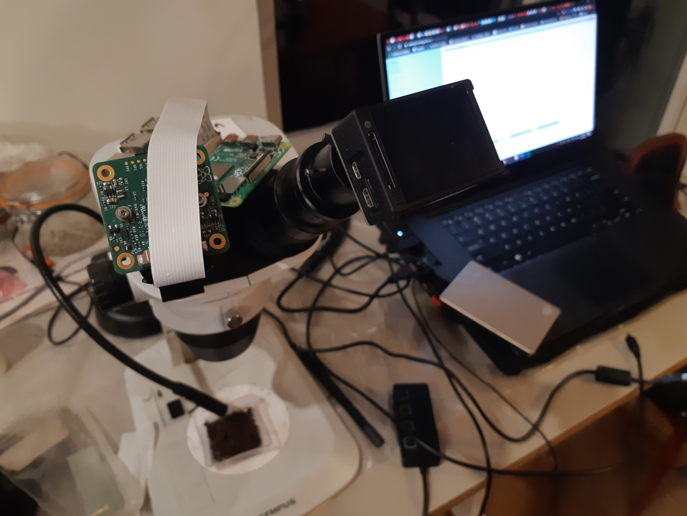
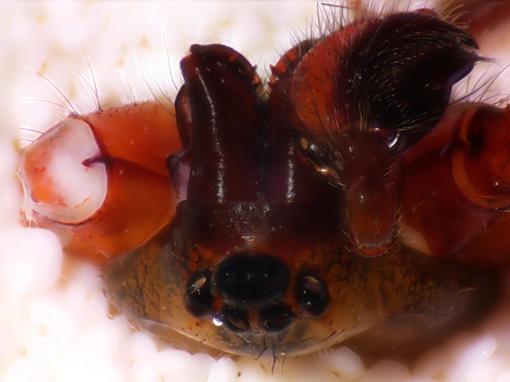
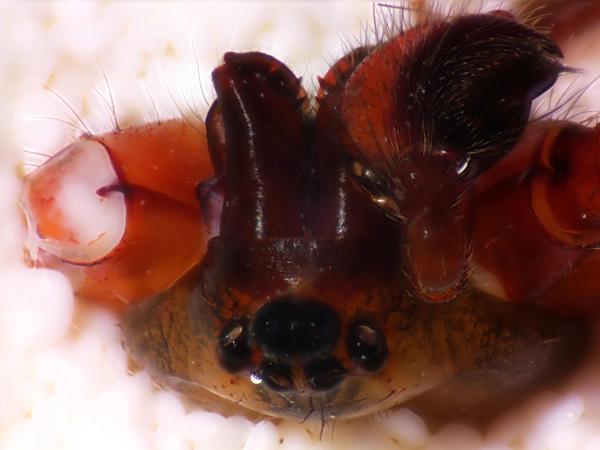

Affordable Microscopy
Microptics represents a service to the community of microscope and macro photographer enthusiasts who want to
take advantage of the most recent technologies in imaging and 4K video without breaking the bank. The goal of my
business is to provide the resources needed to create a new type of youtubers and inaturalists. If you feel interested in
one of my products, please send me an email at
garcilazo.uriel at gmail.com
with information on the type of applications you need it for and we can make you a quote. The final price is based mostly on the availability of the materials and delivery.How it all started
Many things changed for me during the time the pandemic hit in 2020. I had recently changed my career values and was a bit confused on the new path that I should follow. I knew I liked microscopes, and for the first time in many years I had free time; my supervisor had lent me the lab's stereoscope (a good old Olympus SZ61). At the same time, an emeritus professor at UBC was selling compund Leica microscopes for a nominal price to grad students, allowing me to purchase my first compound microscope. This set the perfect background from which I started playing with whatever camera I could get my hands on.

Fig. 1. A top view of the Raspberry Pi (left) and customized GoPro videocamera (right) mounted on the 30 mm eyepieces of an Stereoscope Olympus SZ61
Imagery at 12 MP for CAD $150
The newest generations of credit-card-size microcomputers get more powerful every year. In 2020 Raspberry released a high resolution camera named "Pi HQ Camera". Although limited by the processor in its ability to reliably deliver user friendly video, the photos were astonishingly crisp, so I decided to prototype a mount and connect it to my computer via VNC Viewer.

In combination with a multistack algorithm, the results were at a publication quality level.


 



Video at 4K resolution
GoPro cameras are particularly appropiate for microscopy and macro applications:
- Their small size makes the mounting safer by keeping the center of gravity at the base of the microscope, compared with DSLR
- Their small size makes it possible to mount more than one camera at the same time, enabling stereoscopic video recording
- Their price is more affordable than most other cameras
- Their hardware is simple and compact, making it easy to replace components, as well as being tough
- They have an IMX camera sensor that records at high speeds and resolutions
In addition, these cameras can be used remotely, with previews sent directly to the phone, and if a videocard is connected to it, it can broadcast live by sending the view to the computer as a webcam, making it essential for applications in object detection and machine learning.